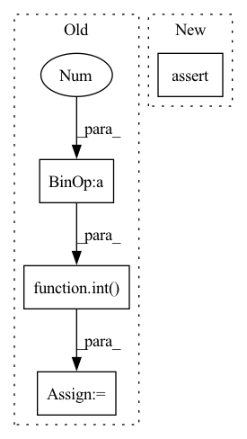

Pattern ID :22900

Before Change
ed = int(tick_to_time[tempos[i + 1].time] * rate * time_aug_factor)
tempo_seq[st:ed] = int(tempos[i].tempo + 0.5)
st = int(tick_to_time[tempos[-1].time] * rate * time_aug_factor)
tempo_seq[st:] = int(tempos[-1].tempo + 0.5)
return note_seq, tempo_seq
def seq_to_midi(
After Change
tempos = midi_obj.tempo_changes
tempos.sort(key=lambda x: (x.time, x.tempo))
assert len(tempos) == 1
tempo_BPM = tempos[0].tempo // global information, beats per minute
tempo_BPS = tempo_BPM / 60.0 // global information, beats per second
In pattern: SUPERPATTERN
Frequency: 4
Non-data size: 4
Instances
Fragment ID: 72791476
Project Name: sjtmusicteam/muskits
Commit Name: 976232e4df99bdbc8298e2a20436034edc51e9ab
Time: 2022-01-10
Author: 2016202112@ruc.edu.cn
File Name: muskit/fileio/utils.py
M Class Name: AnonimousClass
N Class Name: AnonimousClass
M Method Name: midi_to_seq(5)
N Method Name: midi_to_seq(5)
M Parent Class:
N Parent Class:
M File Name: muskit/fileio/utils.py
N File Name: muskit/fileio/utils.py
M Start Line: 41
M End Line: 60
N Start Line: 41
N End Line: 66
'>
Before Change
w = (leading + norm_w.max(-1))[np.newaxis]
modalities = np.split(signal, signal.shape[-1], -1)
colormaps = [plt.cm.get_cmap(name)(np.linspace(0, 1., int(256 / len(modalities)))) for name in CMAPS][
:len(modalities)]
colors = np.concatenate(colormaps, 0)
mycolormap = mcolors.LinearSegmentedColormap.from_list("mycolormap", colors)
ax.imshow(w,
After Change
def impose(weights, signal, colormaps):
assert len(signal.shape) == 3
assert len(weights.shape) == 2
// create a figure
'>
Fragment ID: 72791462
Project Name: kolaszko/haptic_transformer
Commit Name: b78cf689b18ea6854d17e5ed972b867313e8c086
Time: 2021-12-02
Author: michalbednarek.e@gmail.com
File Name: utils/analysis.py
M Class Name: AnonimousClass
N Class Name: AnonimousClass
M Method Name: impose(3)
N Method Name: impose(2)
M Parent Class:
N Parent Class:
M File Name: utils/analysis.py
N File Name: utils/analysis.py
M Start Line: 28
M End Line: 49
N Start Line: 18
N End Line: 58
'>
Before Change
// Compute filter length, ensuring length is odd
N = int(math.ceil(4 / b))
N += N % 2
n = torch.arange(N)
// Define sinc function, avoiding division by zero
def sinc(x): return torch.sin(x) / (x + 1e-10)
// Compute a low-pass filter with cutoff frequency notch_freq.
hlpf = sinc((notch_freq - 2*b) * (n - (N - 1) / 2))
hlpf *= torch.blackman_window(N)
hlpf /= torch.sum(hlpf)
// Compute a high-pass filter with cutoff frequency notch_freq.
hhpf = sinc((notch_freq + 2*b) * (n - (N - 1) / 2))
hhpf *= torch.blackman_window(N)
hhpf /= -torch.sum(hhpf)
hhpf[(N - 1) // 2] += 1
After Change
// Check inputs
assert notch_freq > 0 and notch_freq <= 1
assert N % 2 != 0
pad = N // 2
n = torch.arange(N) - pad
'>
Fragment ID: 72791474
Project Name: speechbrain/speechbrain
Commit Name: a478adfd391cc6d4fe1d41abd3613d20b7fc349d
Time: 2020-03-02
Author: plantinga.peter@protonmail.com
File Name: data_augmentation.py
M Class Name: AnonimousClass
N Class Name: AnonimousClass
M Method Name: notch_filter(3)
N Method Name: notch_filter(2)
M Parent Class:
N Parent Class:
M File Name: data_augmentation.py
N File Name: data_augmentation.py
M Start Line: 1997
M End Line: 2016
N Start Line: 263
N End Line: 342
'>
Before Change
num_steps=8, batch_size=200):
assert 4000 % num_steps == 0
step = int(4000 / num_steps) // stride / hop
outs = []
to_concat = []
After Change
num_steps=8, batch_size=200):
num_samples = 4000
assert num_samples % num_steps == 0
step = int(num_samples / num_steps) // stride / hop
outs = []
to_concat = []
'>
Fragment ID: 72791470
Project Name: snakers4/silero-vad
Commit Name: 23bcad96e52057fc134aea5e72a46ae0b1a75a61
Time: 2020-12-11
Author: dvoronin322@gmail.com
File Name: utils.py
M Class Name: AnonimousClass
N Class Name: AnonimousClass
M Method Name: get_speech_ts(7)
N Method Name: get_speech_ts(7)
M Parent Class:
N Parent Class:
M File Name: utils.py
N File Name: utils.py
M Start Line: 80
M End Line: 110
N Start Line: 80
N End Line: 112